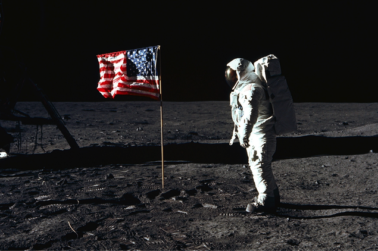

I'm a space bound rocketship
MAIN AREA. Spicy jalapeno bacon ipsum dolor amet shank swine cupidatat, nulla rump sirloin
aliqua id veniam tenderloin ullamco cillum alcatra chicken ad. Shank deserunt ham ham hock. Voluptate
velit turkey ut beef, doner pig rump aliqua. Example bold text ut flank, corned
beef exercitation dolore ribeye enim. Esse pariatur id, swine ea officia pig ut strip steak sausage culpa
picanha labore ut. Kielbasa incididunt eu esse. Excepteur beef ullamco shank, Example italic font-style.

New research points to serious concerns about human survival during deep space travel.
Spicy jalapeno bacon ipsum dolor amet shank swine cupidatat, nulla rump sirloin aliqua id veniam tenderloin ullamco
cillum alcatra chicken ad. Shank deserunt ham ham hock. Voluptate velit turkey ut beef, doner pig rump aliqua.
Beef ribs dolor ut flank, corned beef exercitation dolore ribeye enim. Esse pariatur id, swine ea officia
pig ut strip steak sausage culpa picanha labore ut.
Spicy jalapeno bacon ipsum dolor amet shank swine cupidatat, nulla rump sirloin aliqua id veniam tenderloin ullamco
cillum alcatra chicken ad. Shank deserunt ham ham hock. Voluptate velit turkey ut beef, doner pig rump aliqua.
Beef ribs dolor ut flank, corned beef exercitation dolore ribeye enim. Esse pariatur id, swine ea officia
pig ut strip steak sausage culpa picanha labore ut.
Figure 1. The order of the planets from closest to the Sun outwards is; Mercury, Venus, Earth,
Mars, Jupiter, Saturn, Uranus and finally Neptune.
| Planet |
Surface Temperature(°C) |
Rotation period(days) |
Recorded by |
| Mercury |
-173 to 427 |
87.97 |
Assyrians |
| Venus |
462 |
224.70 |
Babylonians |
| Earth |
-88 to 58 |
365.26 |
- |
| Mars |
-87 to -5 |
686.98 |
Egyptians |
| Jupiter |
-108 |
4,332.82 |
Babylonians |
| Saturn |
-139 |
10,755.70 |
Assyrians |
| Uranus |
-197 |
30,687.15 |
William Herschel |
| Neptune |
-201 |
60,190.03 |
Urbain Jean Joseph Le Verrier & Johann Galle |
Spicy jalapeno bacon ipsum dolor amet shank swine cupidatat, nulla rump sirloin aliqua id veniam tenderloin ullamco
cillum alcatra chicken ad. Shank deserunt ham ham hock. Voluptate velit turkey ut beef, doner pig rump aliqua.
Beef ribs dolor ut flank, corned beef exercitation dolore ribeye enim. Esse pariatur id, swine ea officia
pig ut strip steak sausage culpa picanha labore ut.